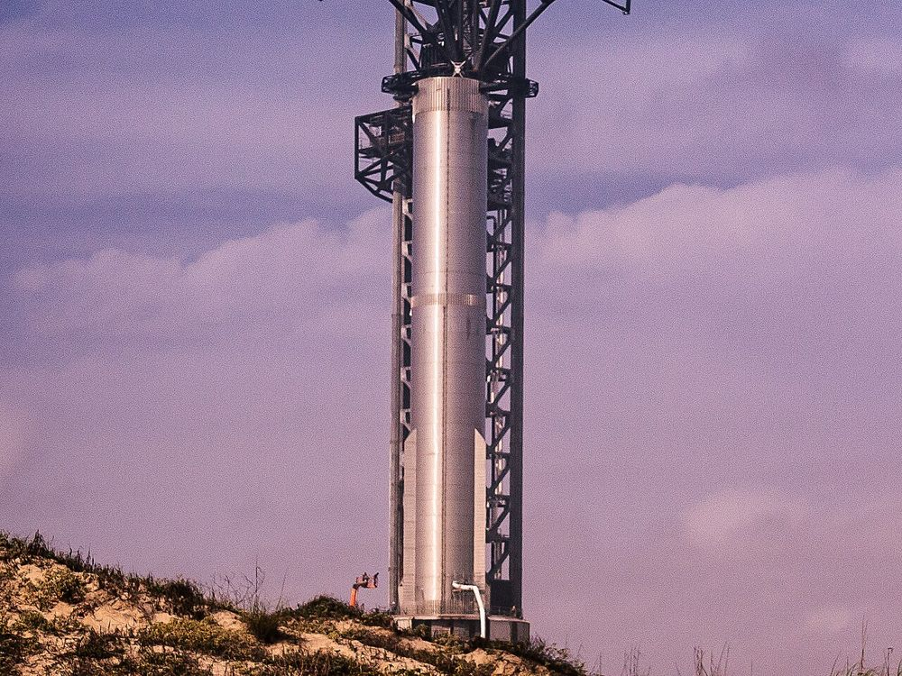

🚀 בוקר טוב חלל
33 מנועים בבת אחת: סטארשיפ מתכוננת לטיסה 15
25 באוקטובר 2026
במהדורה הקודמת סיפרנו שספייס אקס רוצה לתפוס במגדל את שני החלקים של סטארשיפ בטיסה הבאה. עכשיו היא התקדמה צעד נוסף.
ב־25 באוקטובר 2026 ערכה החברה בבסיס סטארבייס שבטקסס ״ניסוי הצתה סטטי״ למאיץ הענק ״סופר הבי״. בניסוי כזה מדליקים את המנועים, אבל הרקטה קשורה לקרקע ולא ממריאה. כל 33 המנועים פעלו יחד במשך כל הזמן המתוכנן.
הניסוי בודק שהכול עובד לפני טיסה 15, המתוכננת לנובמבר. בטיסה הזו ספייס אקס תנסה לראשונה לתפוס בזרועות המגדל גם את המאיץ וגם את החללית. הטיסה עדיין מחכה לאישור של רשות התעופה האמריקאית, ולכן המועד המדויק עוד לא נקבע.
💬 לחשוב ולשוחח: למה לדעתכם ולדעתכן בודקים את המנועים כשהרקטה קשורה לקרקע, לפני שנותנים לה להמריא?
מקורות וקרדיטים
📰 מקורות המידע
- SpaceX Starship Flight 15 · Aerospace Global News (28 באוקטובר 2026)
📖 להעמיק ולקרוא עוד
תמונה: Mobilus In Mobili · רישיון: CC BY-SA 2.0 · מקור התמונה
הידיעה נכתבה במילים שלנו על סמך המקורות.